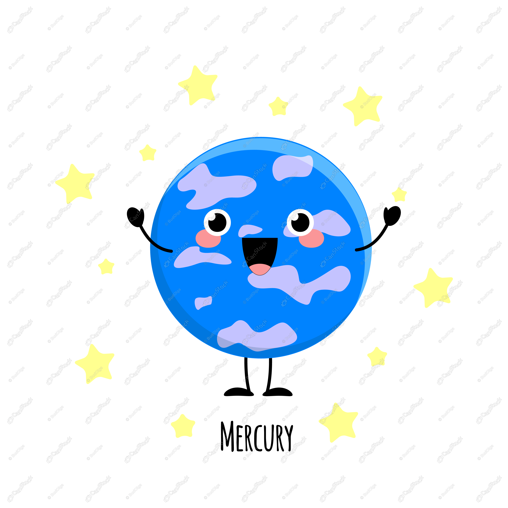
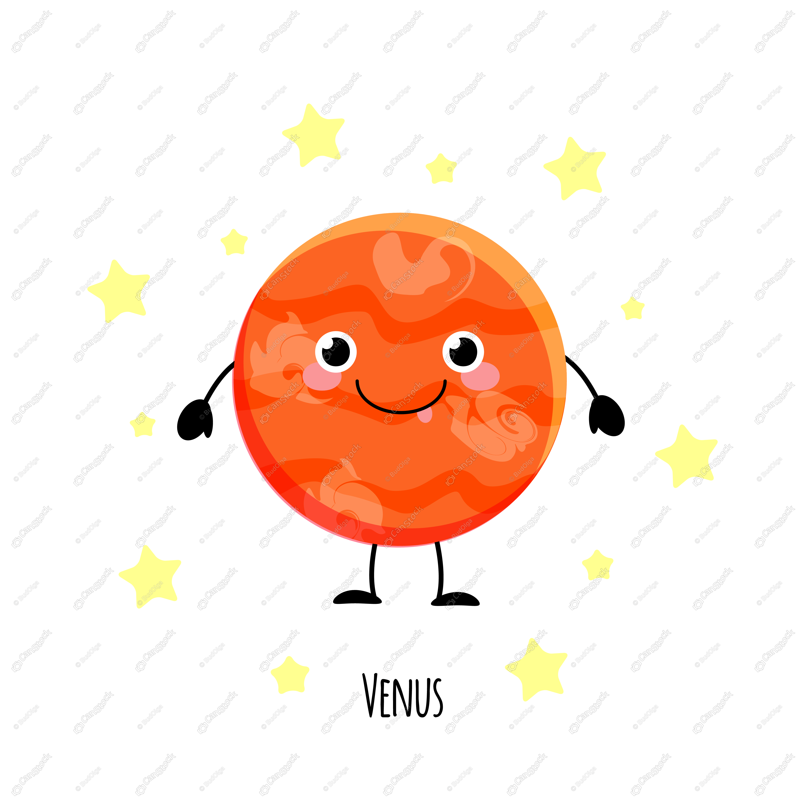
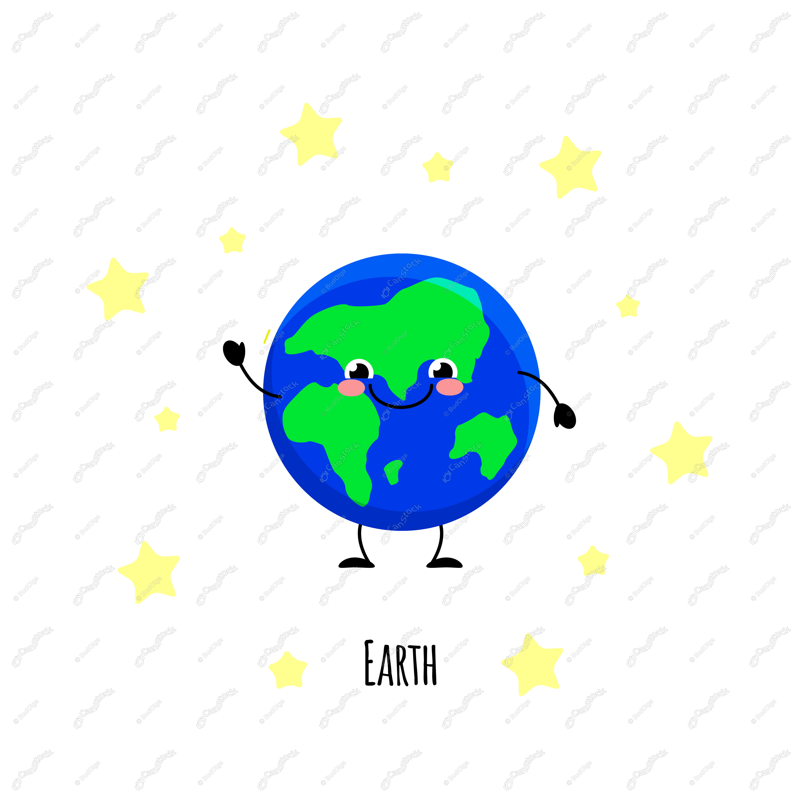
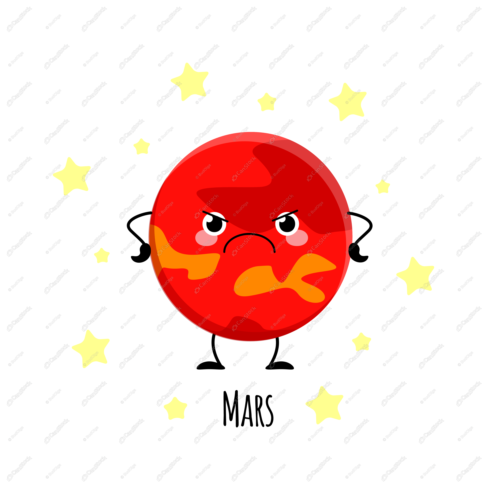
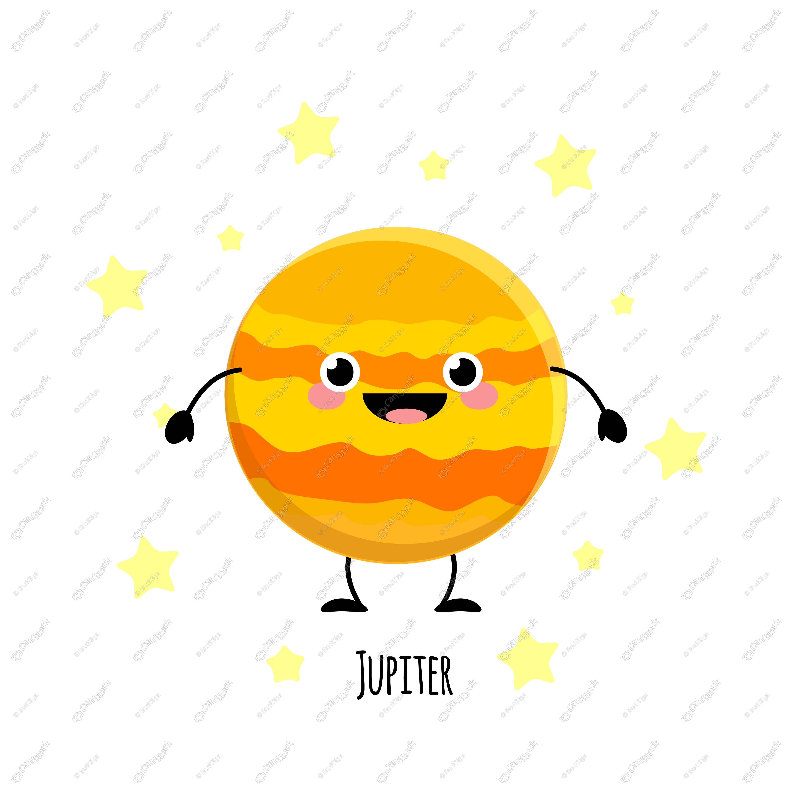
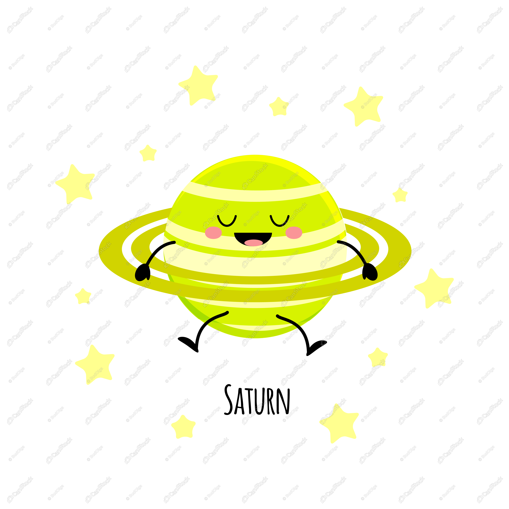
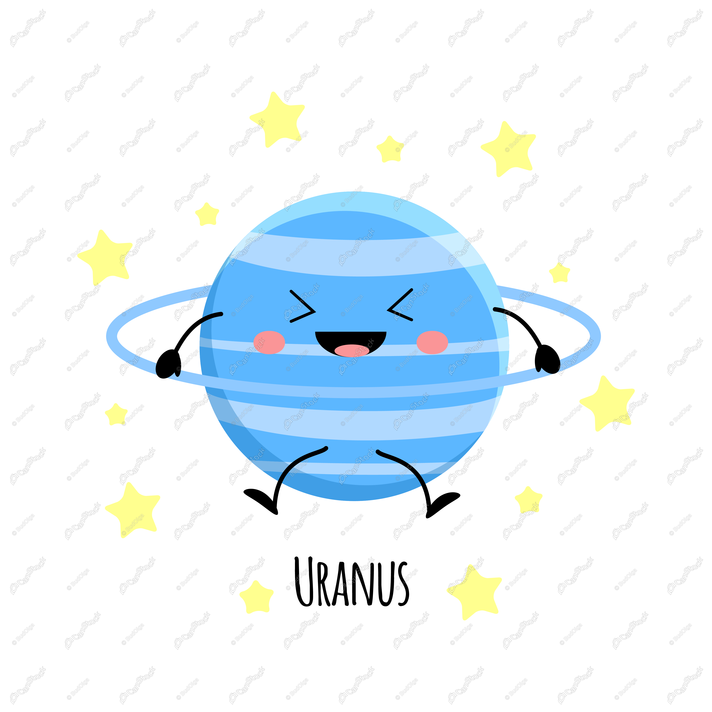
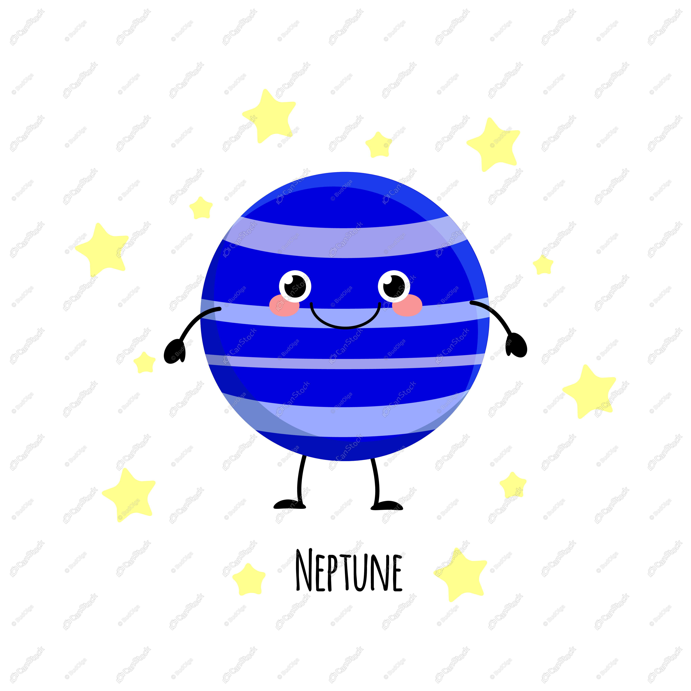

| Planet | Mass (kg) | Diameter (kg) | Mean Density (kg/m3) | Escape Velocity (m/s) | Average Distance from the Sun (AU) | Rotation Period (length in Earth Days) | Revolution Period (length in Earth Days) |
|---|---|---|---|---|---|---|---|
|  | 3.3x1023 | 4,879.4 | 5,420 | 4,300 | 0.387 | 58.65 | 87.97 |
|  | 4.87x1024 | 12,104 | 5,250 | 10,400 | 0.723 | 243.02 (Retrograde) | 244.7 |
|  | 5.98x1024 | 12,756 | 5,520 | 11,200 | 1 | 1 (23.93 hrs) | 365.26 |
|  | 6.42x1023 | 6,787 | 3,940 | 5,000 | 1.524 | 1.026 | 686.98 |
|  | 1.90x1027 | 142,800 | 1,314 | 59,500 | 5.203 | 0.41 | 11.86 |
|  | 5.69x1026 | 120,660 | 690 | 35,600 | 9.537 | 0.44 (10.2 hours) | 29.46 |
|  | 8.68x1025 | 51,118 | 1,290 | 21,300 | 19.19 | 0.72 (17.9 hours) (Retrograde) | 30,685 (84 Earth years) |
|  | 1.02x1026 | 49,528 | 1,640 | 23,300 | 30.07 | 0.67(19.1 hrs) | 60,190 (168.8 Earth Years) |
Image Source: Click Here
Information Source: Click Here